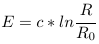
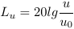
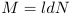
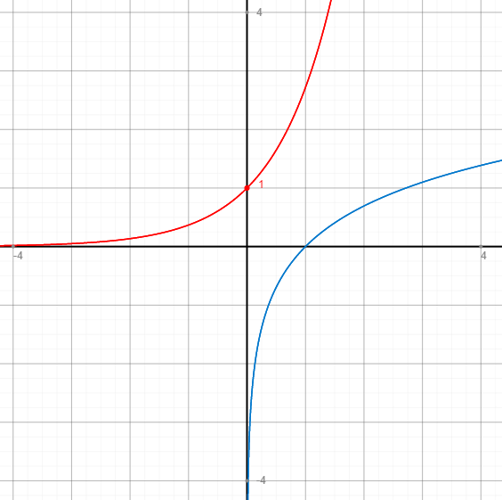
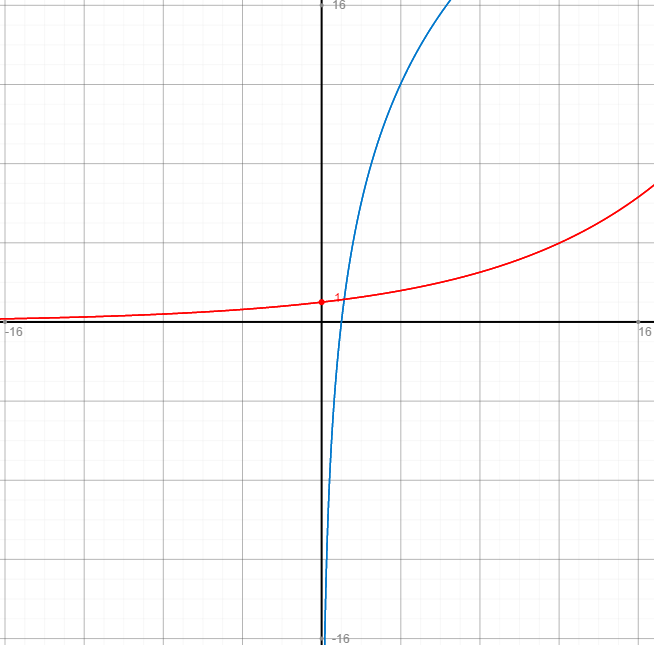
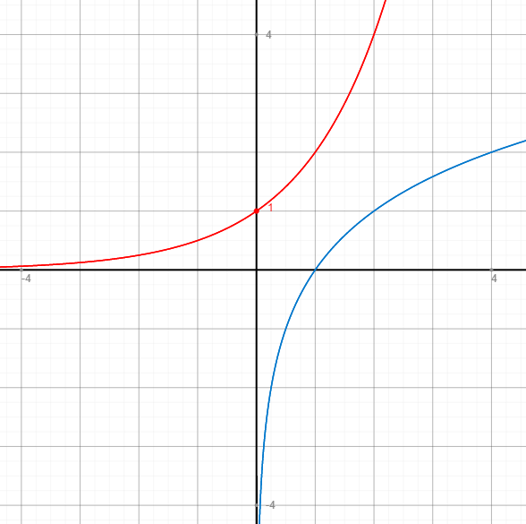
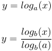

b)
Weber-Fechnersches Gesetz:
Wikipedia: "Das Weber-Fechner-Gesetz besagt, dass sich die subjektiv empfundene Stärke von Sinneseindrücken proportional zum Logarithmus der objektiven Intensität des physikalischen Reizes verhält."
Das Gesetz beschreibt also die Tatsache, dass Menschen bestimmte Reize (Tasten, Schmecken, Sehen, Hören, etc.) erst ab einer gewissen Schwelle überhaupt wahrnehmen und sich allgemein das subjektive Empfinden von Reizen stark abweicht von der objektiven Realität. Da es sich um eine Logarithmusfunktion handelt, steigt das persönliche Empfinden nicht proportional zum physikalischen Phänomen. Je stärker der Reiz bereits ist, desto höher muss die Reizsteigerung ausfallen um subjektiv als deutliche Steigerung empfunden zu werden. So werden zum Beispiel leise Geräusche (tropfender Wasserhahn) in relativer Stille (Nacht) viel stärker wahrgenommen als sogar laute Geräusche (Ruf) in lauter Klangumgebung (Konzert).
Spannungspegel:
Mithilfe dieser Formel lässt sich elektrische Spannung in logarithmischer Form darstellen. Dies ist insbesondere hilfreich, wenn mehrere Bauelemente hintereinander geschaltet werden. Ohne die logarithmische Darstellung müssten wesentlich kompliziertere Rechnungen aufgelöst werden, um die resultierende Spannung herauszufinden. Im Übrigen entspricht die logarithmische Darstellung von Spannungspegeln in der Tontechnik auch viel eher der menschlichen Tonwahrnehmung.
Datenmenge:
M ist die Anzahl der Bits, die benötigt werden, um N verschiedene Zustände abzubilden. Für die Datenmenge bedeutet die Funktion folgendes: 1. Je mehr verschiedene Zustände abbildbar sein sollen, desto größer die Datenmenge. 2. Für jeden weiteren Zuwachs an abbildbaren Zuständen wird die benötigte Zunahme der Datenmenge geringer. Das heißt, dass der Speicherbedarf umso langsamer wächst, je mehr Informationen abzuspeichern sind.
Funktionsgraphen:
Die Formel des Weber-Fechner Gesetzes entspricht der Funktion des natürlichen Logarithmus, wenn man c, R0 = 1 annimmt (blau). Die Umkehrfunktion zu dieser ist e^x (rot): (Funktionsgraph erstellt mit graph.tk)
Der Funktionsterm zur Funktion des Spannungspegels ist 20*log(u) wenn u0 = 1 ist.
Die Umkehrfunktion lautet dann 10^(x/20):

(Funktionsgraph erstellt mit graph.tk)
Die Funktion zur Datenmenge ist der Logarithmus dualis (zur Basis 2). Seine Umkehrfunktion ist die Exponentialfunktion 2^x:

(Funktionsgraph erstellt mit graph.tk)
c:
Um eine Logarithmusfunktion in eine Logarithmusfunktion anderer Basis zu transformieren, bildet man den Bruch aus Logarithmus zu neuer Basis mit altem Argument und Logarithmus ebenfalls zur neuen Basis mit der alten Basis als Argument:
Tabelle für alle Varianten zwischen lg(x), ln(x) und ld(x):